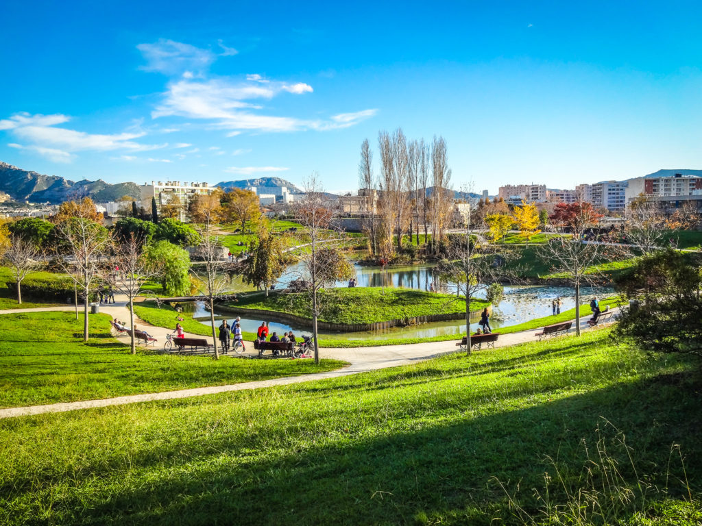
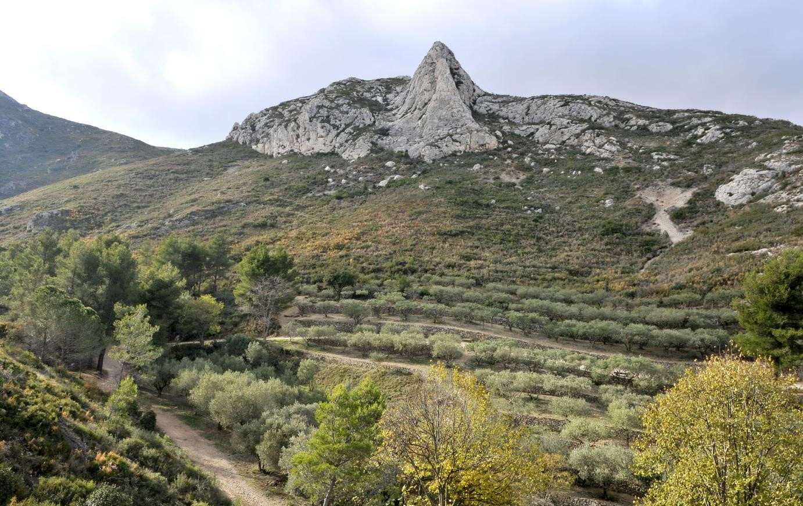
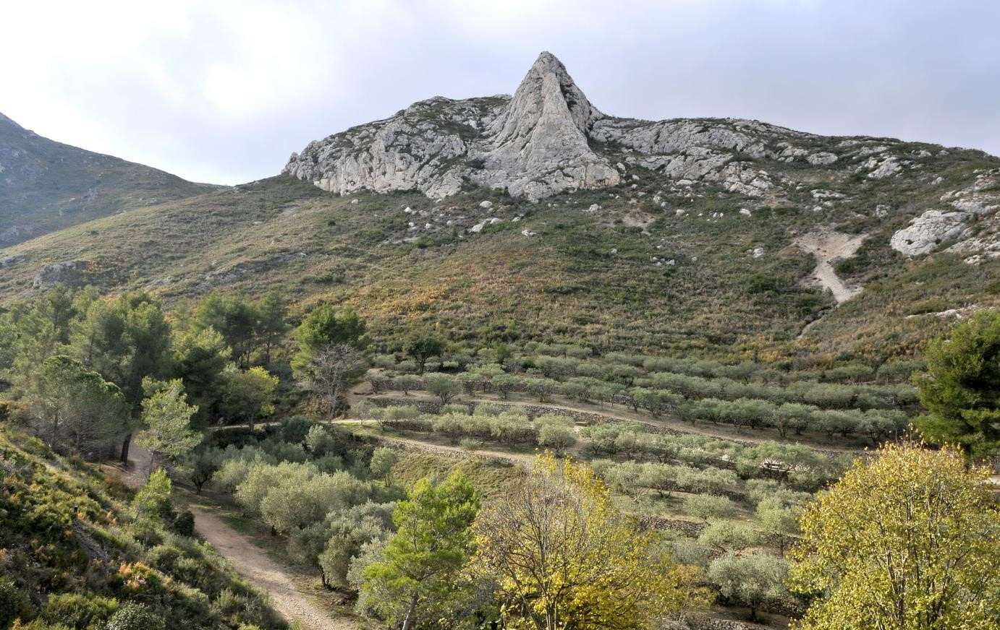

Nos 10 Meilleurs Parcs
Les parcs de Marseille, allant du côtier Parc Borely aux modernes Parc du 26e Centenaire et Parc Balnéaire du Prado, offrent une diversité unique. Des havres paisibles comme le Jardin Emile Duclaux et le Parc des Bruyères invitent à la détente, tandis que le Jardin de la Colline Puget et le Parc de la Moline sont parfaits pour les familles. Explorez ces espaces urbains et naturels, parfaits pour des journées de détente au cœur de Marseille.
Parc Borely
Parc du 26ème centenaire
Parc Balnéaire du Prado

Parc Valmer
Parc des Bruyères
Parc de la Moline

Parc Borely
Parc du 26ème Cententaire

Jardin de la Colline Puget
Palais de Justice Marseille
Jardin Emile Duclaux
Parc de la Maison Blanche


Parc balnéaire du Prado
Parc Valmer

Parc des Bruyères
 
